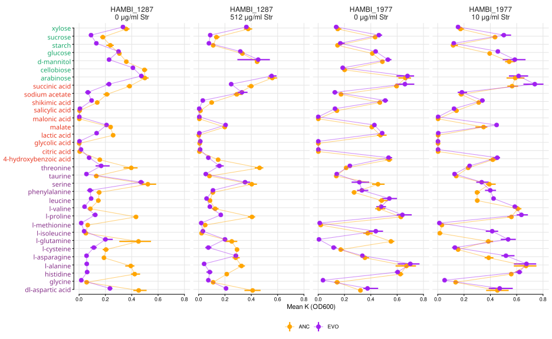
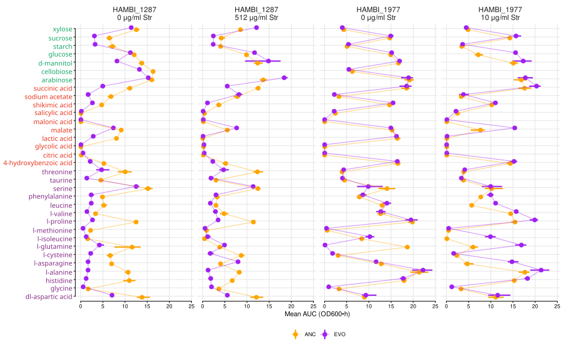
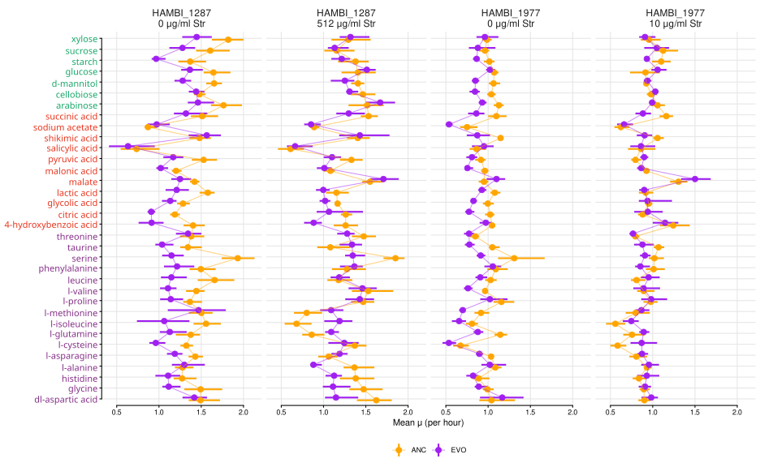

05.C Growth curves on M9MM + single carbon
Analysis and plots across streptomycin concentrations
1 Introduction
Ancestral (streptomycin sensitive) and evolved (streptomycin resistant) forms of Citrobacter koseri HAMBI_1287 and Pseudomonas chlororaphis HAMBI_1977 were grown on 33 single carbon sources in M9 minimal medium, with and without streptomycin.
2 Setup
2.1 Libraries
2.2 Global variables
Show/hide code
data_interim <- here::here("data", "interim", "05_one_carbon_gcurves")
data_processed <- here::here("data", "processed", "05_one_carbon_gcurves")
figs <- here::here("output", "figures")
# make output directories if they don't exist
fs::dir_create(data_interim)
fs::dir_create(data_processed)
fs::dir_create(figs)3 Load data
4 Processing
4.1 Growth rates per well (spline based estimate)
Using the tool growthrates to estimate mu_max. I have found this works a lot better than gcplyr and is more convenient than using another tool outside of R. Nonparametric estimate growth rates by spline is very fast. Fitting to a model takes more time resources. Generally it is best to try multiple approaches and to visualize/check the data to make sure it makes sense.
Unlike upstream, the streptomycin-dosed wells are kept here.
Show/hide code
gcurves_thin_sm <- df |>
# exclude blanks, but keep every streptomycin concentration
filter(strainID != "blank") |>
# need to add a small floor for numerical stability for the spline fit
mutate(
OD600_rollmean_spline = if_else(OD600_rollmean == 0, 1e-3, OD600_rollmean)
) |>
# make uniq id
mutate(id = paste0(plate_name, "|", well))Smoothing splines are a quick method to estimate maximum growth. The method is called nonparametric, because the growth rate is directly estimated from the smoothed data without being restricted to a specific model formula. From growthrates documentation:
The method was inspired by an algorithm of Kahm et al. (2010), with different settings and assumptions. In the moment, spline fitting is always done with log-transformed data, assuming exponential growth at the time point of the maximum of the first derivative of the spline fit. All the hard work is done by function smooth.spline from package stats, that is highly user configurable. Normally, smoothness is automatically determined via cross-validation. This works well in many cases, whereas manual adjustment is required otherwise, e.g. by setting spar to a fixed value [0, 1] that also disables cross-validation.
4.2 Compute K per well
Simply take the maximum observed OD600 value to get a “dumb” empirical estimate of the carrying capacity.
4.3 Compute AUC per well
Area under the growth curve (AUC) is computed per unique well using the trapezoidal rule over time in hours. OD600_rollmean values are used to reduce noise.
4.4 Write growth summaries to disc
streptomycin_ug_ml is carried into the summary table here — upstream it was a constant 0 and could be dropped.
Show/hide code
myformatter <- function(df, grvar) {
df |>
dplyr::select(
species = strainID,
evo_hist,
streptomycin_ug_ml,
carbon_source,
carbon_class,
{{ grvar }}
) |>
mutate(
genotype = str_sub(evo_hist, 1, 1),
) |>
arrange(
species,
genotype,
streptomycin_ug_ml,
carbon_source,
carbon_class
) |>
group_by(
species,
genotype,
streptomycin_ug_ml,
carbon_source,
carbon_class
) |>
mutate(replicate = LETTERS[1:n()]) |>
ungroup() |>
dplyr::select(
species,
genotype,
streptomycin_ug_ml,
carbon_source,
carbon_class,
replicate,
{{ grvar }}
)
}
left_join(myformatter(gr_per_well, mumax), myformatter(k_per_well, max_od)) |>
left_join(myformatter(auc_per_well, auc)) |>
rename(
growth_rate = mumax,
carrying_capacity = max_od,
area_under_growth_curve = auc
) |>
write_tsv(here::here(data_processed, "growth_summaries_carbon.tsv"))4.5 Bootstrap summary by strainID, evo_hist, streptomycin_ug_ml, carbon_source
Show/hide code
set.seed(7391)
auc_summary <- auc_per_well |>
summarize(
tidy_bayes_boot(auc, weighted.mean, use.weights = TRUE),
.by = c(strainID, evo_hist, streptomycin_ug_ml, carbon_source, carbon_class)
)
k_summary <- k_per_well |>
summarize(
tidy_bayes_boot(max_od, weighted.mean, use.weights = TRUE),
.by = c(strainID, evo_hist, streptomycin_ug_ml, carbon_source, carbon_class)
)Replicate counts per point, so the figure captions do not have to assert one.
5 Plot results
carbon_levels (the y axis order after coord_flip()) and the per-carbon-source axis text colour (keyed off carbon_class, looked up via carbon_class_lookup in plotter() below) used to rely on two hard-coded vectors of 20 carbon source names. The data actually has 34 carbon sources, and several of the hard-coded names didn’t match the spelling/capitalization used in carbon_source (e.g. "D-mannitol" vs. "d-mannitol", "asparagine" vs. "l-asparagine"), so the axis text colour was silently coming out blank for those. carbon_levels is now derived from the data itself: alphabetical within each carbon_class, ordered amino acids, then organic acids, then sugars, so that after coord_flip() sugars sit at the top of the axis, then organic acids, then amino acids at the bottom (matching the fig-01 caption below).
Show/hide code
class_colors <- c(
"sugar" = "#17A769",
"organic_acid" = "#E8351E",
"amino_acid" = "#852F88"
)
carbon_class_lookup <- auc_per_well |>
distinct(carbon_source, carbon_class) |>
deframe()
carbon_levels <- carbon_class_lookup |>
tibble::enframe(name = "carbon_source", value = "carbon_class") |>
mutate(
carbon_class = factor(
carbon_class,
levels = c("amino_acid", "organic_acid", "sugar")
)
) |>
arrange(carbon_class, carbon_source) |>
pull(carbon_source)5.1 Growth summaries
Each panel is one species at one streptomycin concentration. Species are never compared across panels at matched dose, because no such dose exists.
Show/hide code
panel_levels <- c(
"HAMBI_1287\n0 μg/ml Str",
"HAMBI_1287\n512 μg/ml Str",
"HAMBI_1977\n0 μg/ml Str",
"HAMBI_1977\n10 μg/ml Str"
)
add_panel <- function(df) {
df |>
mutate(
panel = factor(
paste0(
str_replace(strainID, "^H", "HAMBI_"),
"\n",
streptomycin_ug_ml,
" μg/ml Str"
),
levels = panel_levels
)
)
}Show/hide code
plotter <- function(df, lab) {
dw <- 0.5
psize <- 3
lsize <- 1
df |>
add_panel() |>
#mutate(carbon_source = factor(carbon_source, levels = carbon_levels)) |>
# fill in the untested species/streptomycin/carbon combinations as explicit
# NA rows. Without this the connecting line is drawn straight across the
# four carbon sources that were never run with streptomycin, which reads as
# an interpolated value rather than a gap.
mutate(carbon_source = factor(carbon_source, levels = carbon_levels)) |>
tidyr::complete(panel, evo_hist, carbon_source) |>
# tidy_bayes_boot() names its point estimate `md` (median), not `mn`
ggplot(aes(y = md, x = carbon_source, color = evo_hist)) +
geom_linerange(
aes(ymin = ci_lo, ymax = ci_hi),
position = position_dodge(width = dw),
linewidth = lsize
) +
geom_point(position = position_dodge(width = dw), size = psize) +
geom_line(
aes(group = evo_hist),
alpha = 0.5,
linewidth = lsize - 0.5,
position = position_dodge(width = dw)
) +
# fixed rather than free_x: the +Str panels are missing four carbon
# sources, and free scales would misalign the rows across panels
facet_grid(~panel) +
labs(
y = lab,
x = NULL,
color = "Str Resistance"
) +
# colour each axis label by carbon_class, looked up fresh from
# carbon_class_lookup by name so the colouring can't come out of step
# with whatever order the breaks (x) are actually passed in
scale_x_discrete(
labels = function(x) {
glue::glue("{{.{class_colors[carbon_class_lookup[x]]} {x}}}")
}
) +
scale_color_manual(values = histcols) +
coord_flip() +
theme_mct() +
theme(
axis.text.y = marquee::element_marquee(size = 11),
strip.text = element_text(size = 12),
legend.title = element_blank()
)
}5.2 Plot differences in mean maximum density (empirical K)

5.3 Plot differences in mean AUC (area under growth curve)

5.4 Plot differences in mean growth rate
